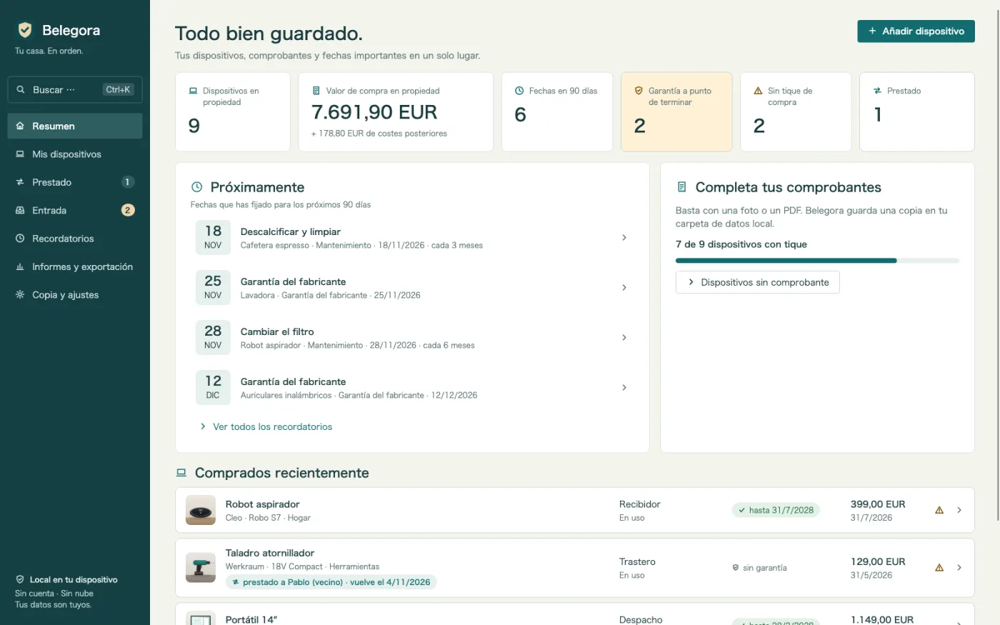
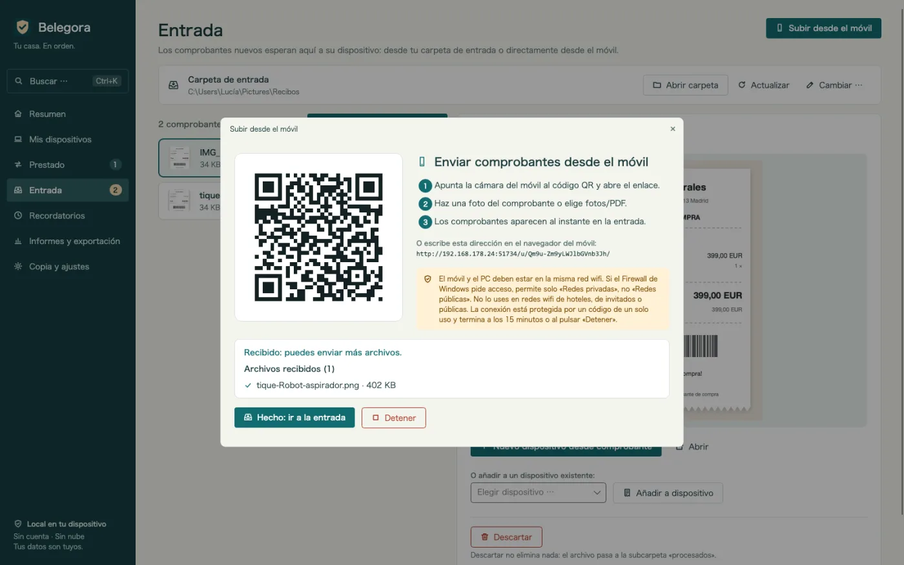
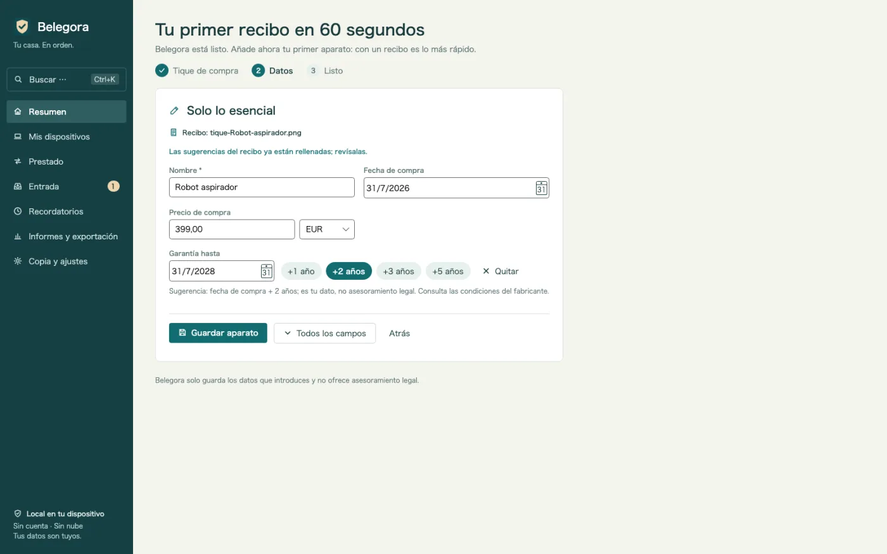
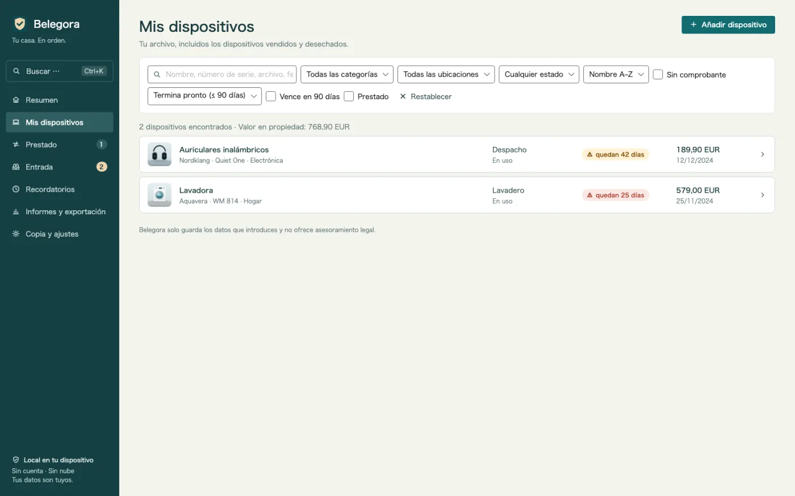
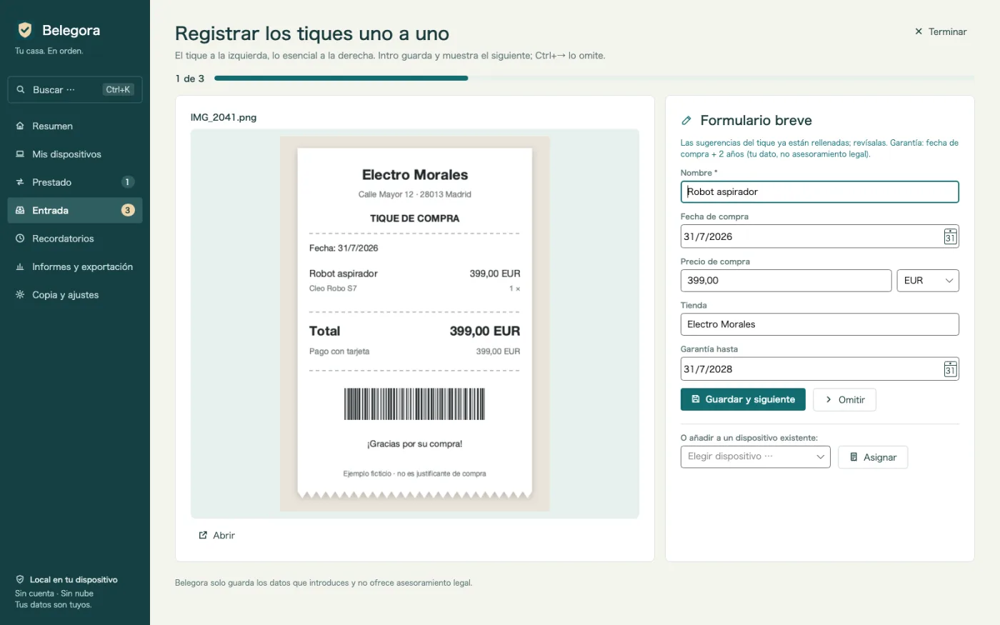
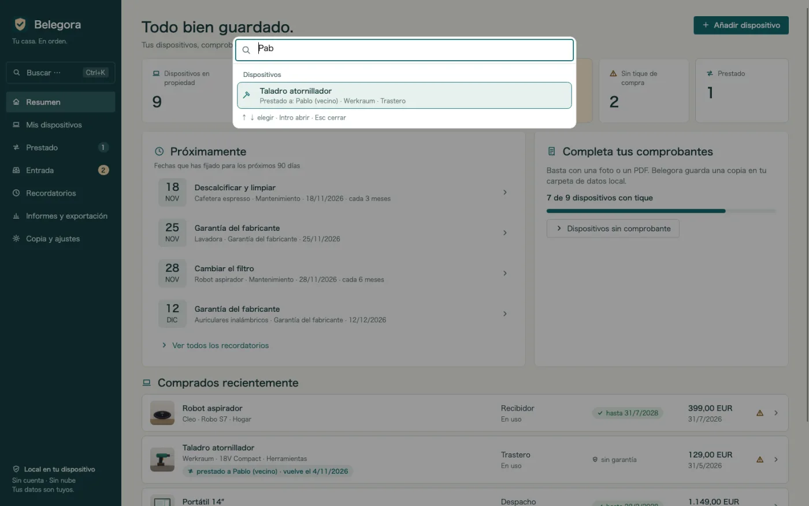
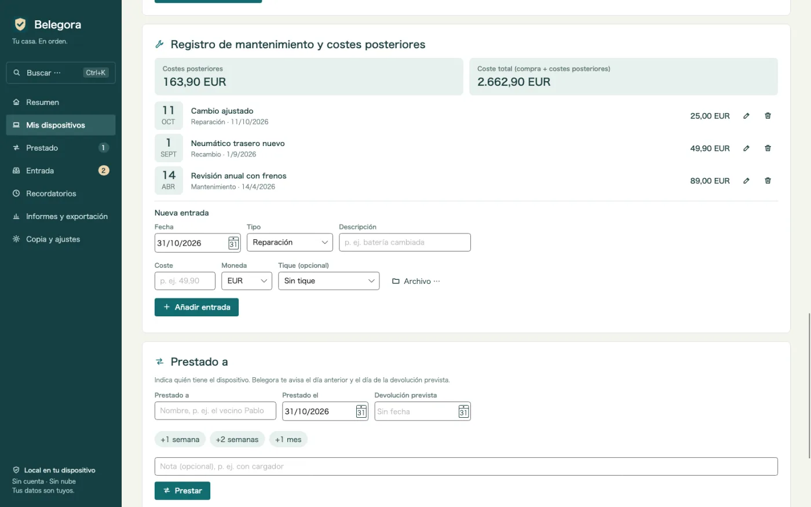
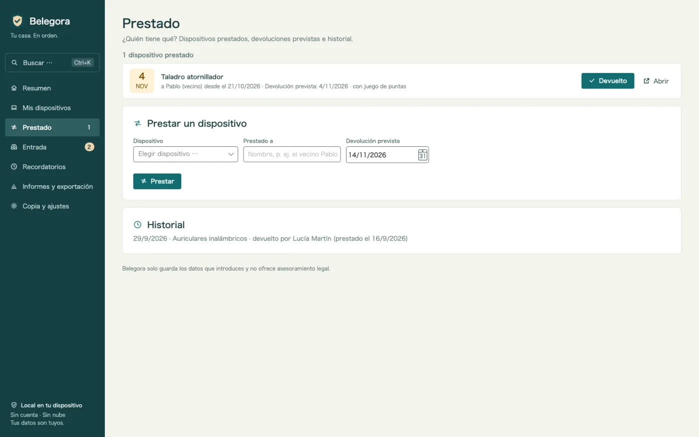
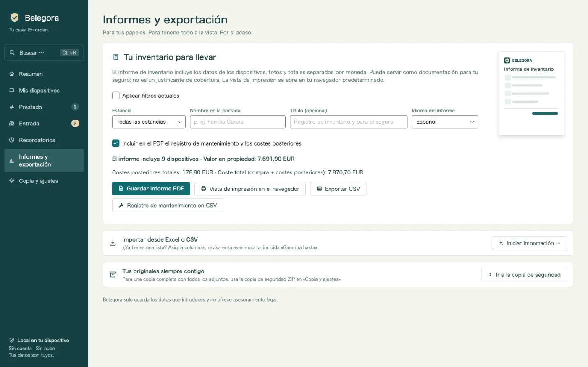
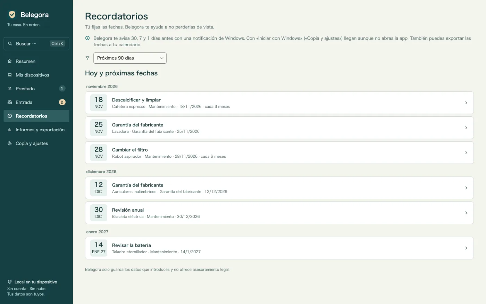

Avisos antes de tus plazos
Garantía, devolución, seguro, mantenimiento: Belegora muestra una notificación de Windows con la antelación que elijas.
Archivo de garantías y tickets para Windows
¿La batería falla a los 20 meses? Ticket, número de serie y fecha de garantía en segundos. Tickets desde el móvil con un código QR, avisos antes de tus plazos y PDF para el seguro. Sin conexión y sin cuenta.

Belegora se encarga de lo tedioso: reunir tickets, sugerir datos y avisarte antes de tus plazos.
Garantía, devolución, seguro, mantenimiento: Belegora muestra una notificación de Windows con la antelación que elijas.
Escanea el código QR y sube la foto desde el navegador. El ticket llega por tu Wi-Fi a la bandeja de entrada. Sin cable, nube ni app.
Fecha de compra, importe y tienda se sugieren a partir del ticket. Revisas, guardas y el aparato se crea con un clic.
La lista de aparatos muestra de un vistazo qué garantía vence pronto, con la columna «Garantía hasta».
Encuentra cualquier aparato por nombre, número de serie, tienda, etiqueta, archivo o prestatario, y lanza acciones como el PDF o la copia de seguridad, con el teclado.
Muchos tiques seguidos: el ticket a la izquierda, el formulario breve con sugerencias a la derecha. Intro guarda, Ctrl+→ omite.
Anota reparaciones, mantenimientos, recambios y accesorios con su coste. Costes posteriores y coste total por aparato, también en PDF y CSV.
¿Quién tiene el taladro? Prestado a, desde cuándo, devolución prevista, con aviso e historial. Y un resumen una vez por semana.
Tras una inundación o un robo: informe con portada, lista por estancia, totales, fotos y tickets. Idioma del informe a elegir.
Trae tu lista con asignación de columnas. Exporta a CSV y los plazos a ICS para cualquier calendario.
Las copias, con adjuntos, son automáticas. La restauración muestra una vista previa.
Sin nube, cuenta, publicidad ni rastreo. Tus datos se quedan en tu PC.
Conviene saber: Belegora guarda tus datos y plazos y no ofrece asesoramiento legal. Las notificaciones aparecen mientras Belegora está en ejecución; la app puede iniciarse con Windows. El reconocimiento de texto usa el OCR de Windows y necesita el paquete de idioma de Windows correspondiente.
Envía una foto desde el móvil por QR, deja un archivo en la carpeta de entrada o importa tu lista de Excel.
Belegora sugiere fecha, importe y tienda. Crea el aparato, fija el plazo y la antelación del aviso.
Belegora te avisa a tiempo. Si pasa algo, el informe para el seguro está listo en minutos.









14,99 €
pago único, precio en Alemania
Ya disponible en Microsoft Store. Los precios pueden variar según el país.
Solo tú. Belegora no envía datos ni a nosotros ni a terceros; no hay cuenta ni telemetría. La subida desde el móvil solo funciona en tu red local.
En tu PC, en la carpeta de datos de la app (%LOCALAPPDATA%\MinhStudios\Belegora), junto con copias de los adjuntos y las copias automáticas.
Crea una copia en Belegora (ZIP con todos los datos y adjuntos), cópiala al PC nuevo, instala Belegora y restáurala. La vista previa muestra qué se restaura.
No. Belegora guarda tus datos y plazos y no ofrece asesoramiento legal. El derecho lo confirman la tienda, el fabricante o la aseguradora.
Las notificaciones aparecen mientras Belegora está en ejecución; la app puede iniciarse con Windows. También puedes exportar los plazos en ICS a tu calendario.